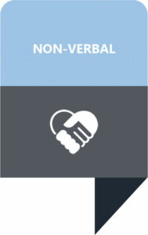
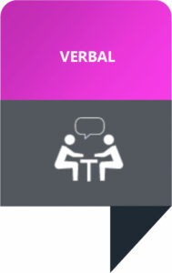
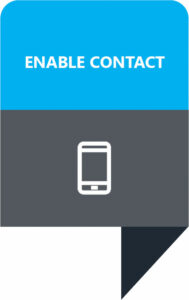

Relax.
Make eye contact.
Smile to greet.
Approach from front.
Use your usual posture, facial expression and gestures.

Identify yourself.
Face the person.
Talk to the person with a disability.
Use your usual voice and volume.
Be patient, don’t rush.
Silence during conversation is OK.
Ask before you help.

Enable contact with your organization via website, phone/text, apps, hardcopy information as well as in person.
Ask people with a disability how they like to communicate with you.
Be considerate of impairment.